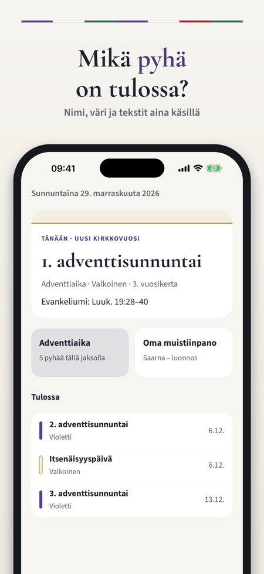
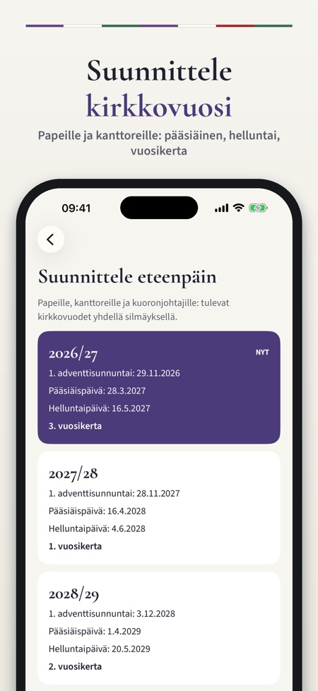
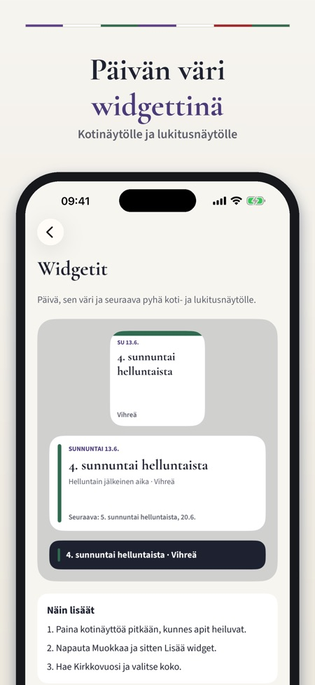

Raamatuntekstit, värit, juhlat. Mikä pyhä on tulossa, mitkä tekstit ja mikä väri? Koko kirkkovuosi kolmen vuosikerran teksteineen – myös widgettinä. Uusi kirkkovuosi alkaa 29. marraskuuta.



Kaikki pyhät, tekstit ja liturgiset värit Suomen evankelis-luterilaisessa kirkossa – papeille, kanttoreille, kuoronjohtajille, suntioille ja kaikille, jotka käyvät kirkossa. Mikä pyhä on tulossa, mitkä tekstit ja mikä väri? Kirkkovuosi pitää vastauksen aina käden ulottuvilla.
TÄNÄÄN
• Seuraava sunnuntai tai pyhäpäivä: nimi, liturginen väri ja vuosikerta
• Evankeliumi ja muut lukukappaleet raamatunviitteinä
• Tulevat pyhät ja juhlat
KOKO KIRKKOVUOSI
• Kaikki pyhät ensimmäisestä adventtisunnuntaista tuomiosunnuntaihin
• Kirkkovuoden ajanjaksoittain: adventti, joulu, loppiainen, paasto, pääsiäinen ja helluntai
• Liikkuvat pyhät lasketaan puhelimessa pääsiäisen ajankohdasta – verkkoyhteyttä ei tarvita
VUOSIKERRAT
• Kirkon kolme vuosikertaa, ja käytössä oleva vuosikerta näkyy
• Muut vuosikerrat jokaisen pyhän kohdalla
• Hae päivää tai Raamatun kirjaa ja kopioi viitteet
SUUNNITTELE
• Suunnittele kirkkovuosia eteenpäin: 1. adventtisunnuntai, pääsiäinen, helluntai ja vuosikerta
• Muistiinpanot jokaiselle pyhälle – saarnaluonnokset, kuorosuunnitelmat, muistettavat
• Muistutus lauantai-iltana: pyhän nimi, väri ja evankeliumi
• Widgetit koti- ja lukitusnäytölle
• Jaettava kortti päivästä ja teksteistä seurakuntalehteen tai someen
OPI KIRKKOVUODESTA
• Lyhyet selitykset kirkkovuoden ajoista, liturgisista väreistä, vuosikerroista ja pääsiäisen ajankohdasta
OSTO
Tämä päivä, kalenteri ja seuraavan 28 päivän tekstit ovat käytössä ilman ostoa. Kertaosto avaa koko kirkkovuoden: kaikkien päivien tekstit, kaikki vuosikerrat, tulevat kirkkovuodet, muistiinpanot ja kaikki widgetit. Pieni widget ja lauantai-illan muistutus eivät vaadi ostoa. Oston voi jakaa perheen kesken (Perhejako). Ei tilausta, ei mainoksia, ei kirjautumista.
Sovellus näyttää vain raamatunviitteet, ei raamatuntekstiä. Kirkkovuosi on itsenäinen sovellus, eikä se ole Suomen evankelis-luterilaisen kirkon tekemä tai siihen liittyvä.
TIETOSUOJA
Muistiinpanot tallentuvat vain puhelimeen. Sovellus lähettää käyttötilastoa ilman nimeä, sähköpostia tai mainostunnistetta Google Analytics for Firebasen kautta (satunnainen sovellustunniste; esim. käytetyt näkymät ja painikkeet, sovelluksen sisäiset ostot ja likimääräinen maa); sen voi kytkeä pois asetuksista.